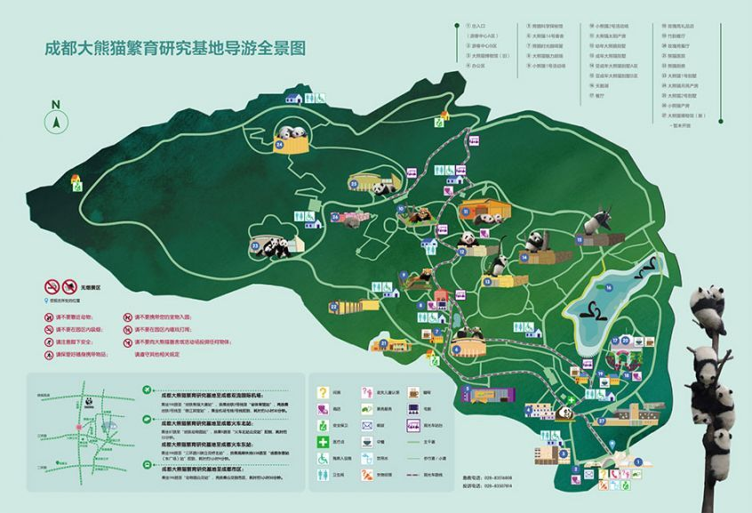
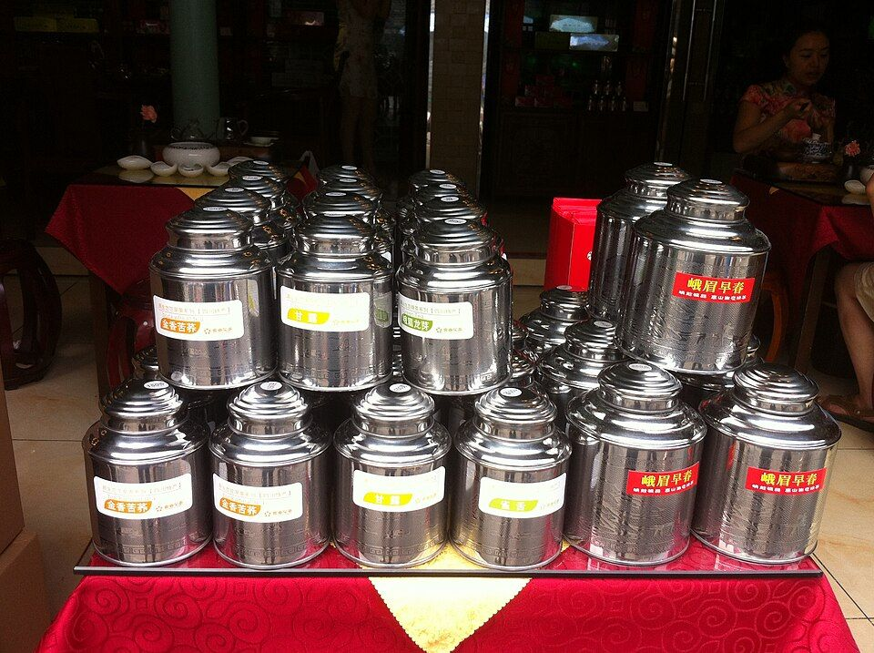
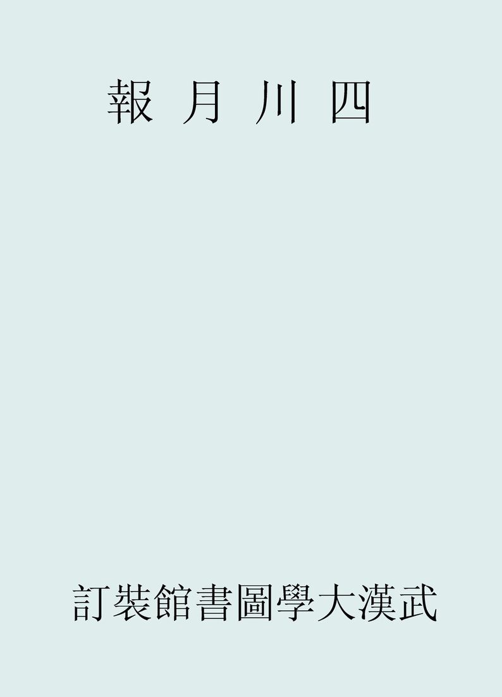
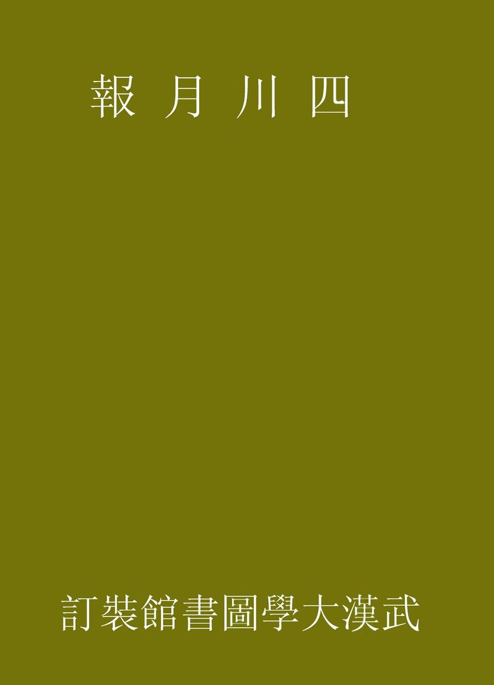
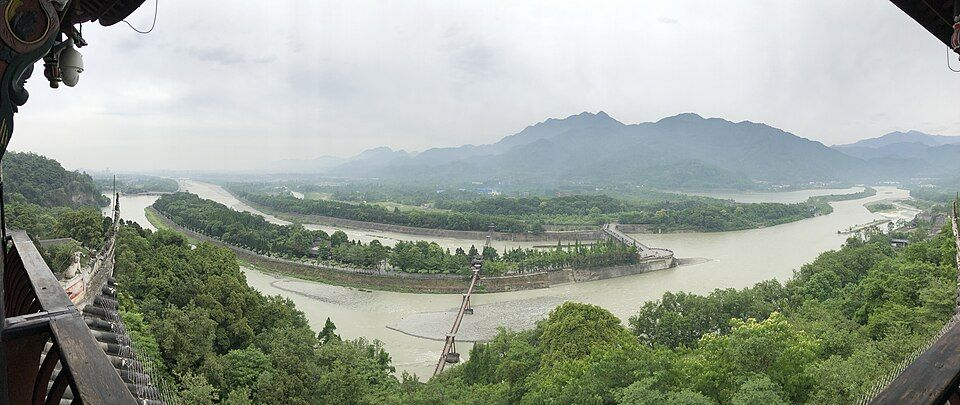
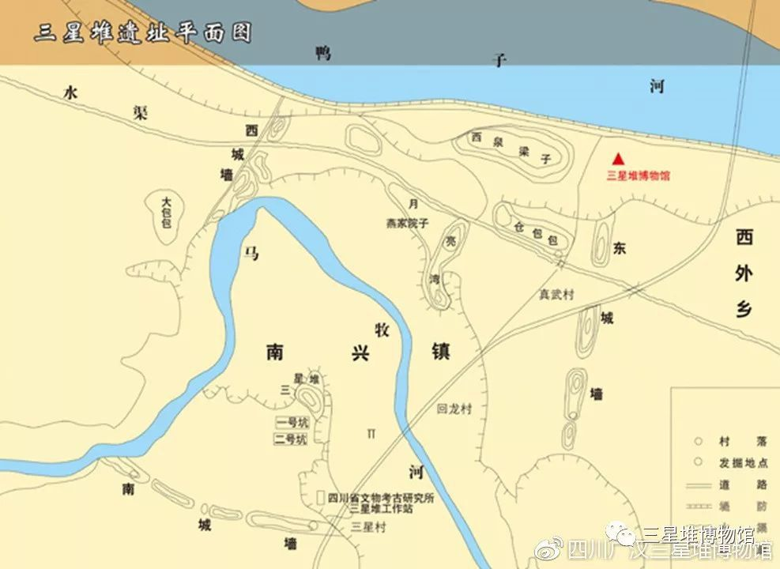
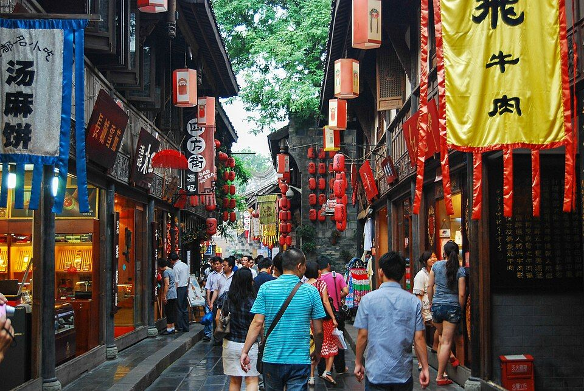
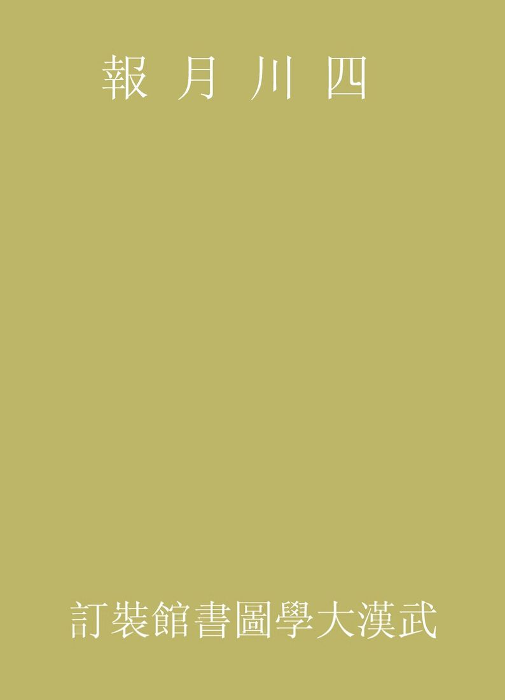
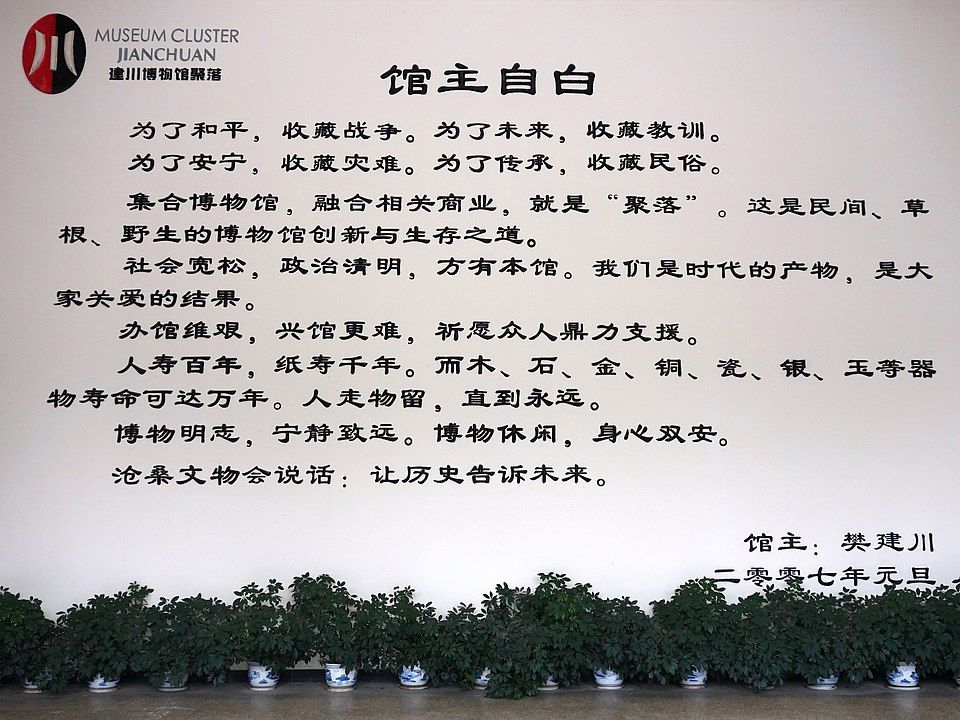

先看结论
-
成都适合的玩法
- 熊猫线成都大熊猫繁育研究基地、熊猫谷、都江堰中华大熊猫苑、熊猫邮局、IFS 熊猫墙
- 市井慢生活线人民公园、鹤鸣茶社、宽窄巷子、奎星楼街、小通巷、泡桐树街、芳草街、玉林路
- 三国和诗歌线武侯祠、锦里、杜甫草堂、浣花溪公园、四川博物院、青羊宫
- 古蜀文明线成都博物馆、四川博物院、三星堆博物馆、金沙遗址博物馆复开后、成都自然博物馆
- 潮流消费线春熙路、太古里、IFS、镋钯街、望平街、东郊记忆、建设路、九眼桥
- 山水远郊线都江堰、青城山、街子古镇、安仁古镇、西岭雪山、天台山、龙泉山丹景台
- 吃喝线火锅、串串、冒菜、川菜、甜水面、担担面、钟水饺、龙抄手、肥肠粉、蛋烘糕、兔头、冰粉、茶馆
-
必去优先级
- 第一梯队熊猫基地、武侯祠、杜甫草堂、成都博物馆、人民公园、宽窄巷子、奎星楼街、春熙路/太古里、都江堰
- 第二梯队四川博物院、成都自然博物馆、文殊院、青羊宫、锦里、东郊记忆、建设路、玉林路、青城山
- 时间多再去三星堆、洛带古镇、安仁古镇、西岭雪山、龙泉山丹景台、街子古镇、黄龙溪、天台山、熊猫谷
- 亲子优先熊猫基地、成都自然博物馆、成都博物馆、四川科技馆、成都动物园、成都植物园、三星堆
-
平台高频玩法
- 小红书风格熊猫基地早八看熊猫、人民公园喝盖碗茶、宽窄巷子和奎星楼街串吃、玉林路 Citywalk、太古里街拍、镋钯街咖啡、东郊记忆拍照
- B 站 Vlog 风格成都三天两晚吃喝、熊猫基地半日、武侯祠锦里、杜甫草堂浣花溪、都江堰青城山一日、三星堆一日
- 抖音路线风格IFS 熊猫、春熙路太古里、宽窄巷子、锦里夜景、人民公园采耳、建设路小吃、九眼桥夜景、熊猫基地花花
-
游玩原则
- 成都不是赶景点型城市，核心体验是“慢、吃、茶馆、公园、街区、博物馆”
- 熊猫基地要早去，夏天更要早去；下午熊猫多在睡觉，体验明显下降
- 市区景点靠地铁和打车很方便，远郊如都江堰、青城山、三星堆、西岭雪山要单独留整天
- 成都美食默认辣、麻、油、重口，不能吃辣要提前说清楚，不要第一顿就挑战重辣火锅
- 金沙遗址博物馆已于 2025 年 12 月 5 日起闭馆综合提升，计划至 2027 年 4 月 30 日，当前不要安排入内参观
快速决策索引
全年月份速查
季节限定景观
景点营业时间和票价速查
-
成都大熊猫繁育研究基地
- 时间11 月至次年 2 月 8:00-17:30，3 月至 10 月 7:30-18:00；分上下午预约入园
- 票价成人票 55 元，学生票 27 元，符合条件老人/儿童/优待人群免费或免费不免票
- 提醒官方渠道可提前 14 日预约，热门日期早场票紧张，不要信收费快速入园
-
成都大熊猫繁育研究基地都江堰繁育研究基地/熊猫谷
- 时间通常白天开放，常见 8:30-17:00/17:30，具体以官方票务为准
- 票价常见约 55-58 元区间，优惠以官方为准
- 提醒比市区熊猫基地更远，适合和都江堰/青城山搭配
-
武侯祠博物馆
- 时间8:30-18:30，17:30 停止售票；惠民活动和夏季延时以官方公告为准
- 票价全价 50 元，半价 25 元，年票 100 元
- 提醒锦里免费，武侯祠文物区收费，春节大庙会可能有临时政策
-
锦里
- 时间开放式街区，以店铺和夜间活动为准
- 票价免费，以店铺消费为准
- 提醒夜景氛围强，餐饮更偏游客化
-
杜甫草堂博物馆
- 时间9:00-18:00，17:00 停止售票
- 票价常见成人票约 50 元，优惠以官方票务为准
- 提醒适合和浣花溪、四川博物院同日
-
成都博物馆
- 时间周一闭馆，周二至周四/周日 9:00-17:00，16:30 停止入馆；周五周六常规延时至 20:30，20:00 停止入馆
- 票价免费预约，部分特展另行预约或收费
- 提醒天府广场旁，雨天和亲子非常合适
-
四川博物院
- 时间通常周二至周日 9:00-17:00，16:00 停止入馆，周一闭馆；暑期/节假日可能延时
- 票价免费预约
- 提醒和杜甫草堂、浣花溪相邻
-
金沙遗址博物馆
- 时间2025 年 12 月 5 日至 2027 年 4 月 30 日闭馆综合提升
- 票价闭馆期间不可入内参观
- 提醒当前用成都博物馆、四川博物院、三星堆替代古蜀文明线
-
成都自然博物馆
- 时间通常周二至周日开放，常规约 9:00-17:00；节假日和暑期可能延时
- 票价免费或低价预约政策以官方为准，特展另计
- 提醒恐龙、地质、自然主题，亲子优先
-
四川科技馆
- 时间常见 10:00-16:00，15:00 停止入馆，周一闭馆；节假日以公告为准
- 票价免费预约
- 提醒亲子雨天备选，预约名额紧张
-
文殊院
- 时间通常 8:00-17:00 左右
- 票价免费
- 提醒吃文殊坊小吃、买糕点、喝茶可顺路
-
青羊宫
- 时间通常 8:00-18:00 左右
- 票价常见约 10 元
- 提醒道教文化和银杏季更有氛围
-
大慈寺
- 时间通常 8:00-17:00 左右
- 票价免费
- 提醒藏在太古里旁边，适合闹市慢逛
-
人民公园
- 时间开放式公园，通常清晨到晚间开放
- 票价免费，茶馆、采耳、划船另计
- 提醒鹤鸣茶社人多，周末要错峰
-
宽窄巷子
- 时间开放式街区，店铺以各自营业时间为准
- 票价免费，以店铺消费为准
- 提醒适合看院落和街巷，不建议在主街吃正餐
-
奎星楼街、小通巷、泡桐树街
- 时间开放式街区，以店铺为准，午后到夜间更热闹
- 票价免费，以餐饮消费为准
- 提醒热门店排队夸张，适合分散吃
-
春熙路、太古里、IFS
- 时间开放式商圈，以商场和店铺为准
- 票价免费，以消费为准
- 提醒IFS 熊猫墙拍照排队，太古里适合街拍和咖啡
-
东郊记忆
- 时间开放式街区，以展览、演出、店铺为准
- 票价街区免费，展演另计
- 提醒适合拍照、看展、Livehouse 和夜间散步
-
建设路美食街
- 时间开放式街区，以店铺和摊位为准，下午到夜间更热闹
- 票价免费，以餐饮消费为准
- 提醒小吃密集但排队多，别一条街吃撑
-
玉林路、芳草街、玉林西路
- 时间开放式街区，以店铺为准
- 票价免费，以餐饮/酒吧消费为准
- 提醒更适合本地生活感、酒吧和小店，别期待统一景区
-
九眼桥、安顺廊桥、望平街
- 时间开放式夜景街区，以酒吧/店铺/游船为准
- 票价免费，游船和酒吧另计
- 提醒夜景好，酒吧消费要看清单价
-
夜游锦江
- 时间夜间游船场次制，以官方票务为准
- 票价按航线和舱位售票，价格浮动
- 提醒雨天、汛期、活动期可能调整
-
都江堰景区
- 时间常规约 8:00-17:30，分时段预约入园
- 票价成人票 80 元；观光车、扶梯、讲解等另计
- 提醒南桥夜景免费在景区外，景区内鱼嘴、飞沙堰、宝瓶口需要门票
-
青城山前山
- 时间5 月至 9 月约 8:30-17:30，其他月份约 8:30-17:00
- 票价常见约 80 元，索道/船票另计
- 提醒前山偏道教人文，后山偏自然徒步
-
青城后山
- 时间夏季约 8:00-18:00，冬季约 8:00-17:30
- 票价常见约 20 元，索道/摆渡/船票另计
- 提醒后山路程长，雨后湿滑，别穿皮鞋
-
三星堆博物馆
- 时间常规陈列馆 8:30-18:00，17:00 停止入馆；修复馆 9:00-17:00；黄金周、小长假和寒暑假可能延时到 20:00
- 票价普通票常见 72 元，官方渠道预约
- 提醒在广汉，不在成都市区，至少留半天到 1 天
-
洛带古镇
- 时间开放式古镇，以店铺、会馆、活动为准
- 票价古镇街区免费，会馆/展馆/项目另计
- 提醒客家文化和伤心凉粉高频，适合半日
-
安仁古镇、建川博物馆聚落
- 时间古镇开放式；建川博物馆约 9:00-17:30，具体以官方为准
- 票价古镇免费，建川博物馆通票/单馆票以官方为准
- 提醒适合民国建筑、博物馆和近代史兴趣者
-
街子古镇
- 时间开放式古镇，以店铺为准
- 票价古镇免费，周边项目另计
- 提醒适合和青城后山、都江堰方向搭配
-
黄龙溪古镇
- 时间开放式古镇，以店铺为准
- 票价免费，项目另计
- 提醒夏季玩水人多，商业化明显
-
龙泉山丹景台
- 时间周一至周五 9:00-17:00，周末 9:00-17:30；展览馆周一闭馆
- 票价景区免费，丹景阁/玻璃栈道等项目以现场为准
- 提醒春花、秋冬彩林和日落更值得
-
成都植物园
- 时间通常 8:00-18:00 左右
- 票价常见约 10 元
- 提醒春花、亲子、植物科普适合
-
成都动物园
- 时间通常 8:00-17:00/18:00，季节略有不同
- 票价常见约 20 元
- 提醒亲子备选，不要和熊猫基地混为一谈
-
西岭雪山
- 时间通常白天开放，索道和滑雪场按季节/天气运行
- 票价门票、鸳鸯池索道、日月坪索道、滑雪票分开或套票售卖，价格浮动
- 提醒雪季和索道强依赖天气，提前一天复核
-
天台山
- 时间通常白天开放，夏季玩水和萤火虫活动以景区公告为准
- 票价门票和观光车/项目另计
- 提醒离市区较远，适合自驾或住一晚
行前准备
-
预约和票务
- 熊猫基地早场票
- 成都博物馆预约
- 四川博物院预约
- 成都自然博物馆预约
- 四川科技馆预约
- 武侯祠、杜甫草堂门票
- 都江堰、青城山门票
- 三星堆门票和交通
- 西岭雪山索道/滑雪票
-
衣物
- 春秋薄外套、运动鞋、雨伞
- 夏季防晒、遮阳帽、雨伞、轻薄衣物
- 冬季防风外套、保暖内搭，成都湿冷明显
- 远郊山地防滑鞋、雨衣、备用袜子
-
口味
- 火锅默认辣度不等，第一次建议微辣或鸳鸯
- 兔头、肥肠、脑花、折耳根、红油小吃口味门槛高
- 茶馆采耳、掏耳、按摩要提前问价
-
实时复核
- 熊猫基地当天限流和早场票
- 金沙遗址闭馆状态
- 都江堰/青城山节假日入园政策
- 三星堆预约余量
- 西岭雪山雪况和索道
- 龙泉山桃花、银杏、赏花实时图
住宿建议
-
春熙路、太古里、天府广场片区
- 适合第一次来、购物、夜生活、地铁换乘
- 优点去大多数市区景点方便，吃喝多，晚上不无聊
- 缺点价格高，节假日拥挤，部分酒店房间小
- 推荐玩法春熙路、太古里、IFS、成都博物馆、人民公园、宽窄巷子
-
宽窄巷子、人民公园、奎星楼片区
- 适合市井慢生活、茶馆、小吃、Citywalk
- 优点走路能串很多老城点位，氛围好
- 缺点老城区停车困难，热门街道夜间会吵
- 推荐玩法人民公园、宽窄巷子、奎星楼街、小通巷、泡桐树街
-
武侯祠、锦里、华西坝、玉林片区
- 适合三国文化、酒吧、小店、川大华西、人文生活感
- 优点吃喝密集，去武侯祠锦里和玉林方便
- 缺点到熊猫基地和东郊记忆跨城较远
- 推荐玩法武侯祠、锦里、玉林路、芳草街、华西坝、九眼桥
-
文殊院、骡马市、梁家巷片区
- 适合预算友好、老城小吃、去熊猫基地相对顺
- 优点交通便利，生活气重，小吃多
- 缺点商业精致度不如太古里
- 推荐玩法文殊院、文殊坊、成都动物园、熊猫基地
-
东郊记忆、建设路、成华区片区
- 适合年轻人、夜宵、Livehouse、熊猫基地方向
- 优点美食和夜生活强，去熊猫基地比较顺
- 缺点离杜甫草堂、武侯祠、青羊区较远
- 推荐玩法建设路、东郊记忆、猛追湾、望平街、熊猫基地
-
成都东站、成都南站、双流机场、天府机场片区
- 适合早晚车/早晚航班、只中转一晚
- 优点交通稳定
- 缺点旅游氛围弱
- 推荐玩法东站适合去三星堆/高铁，南站适合城南商圈，机场片区只建议赶路
地图分区
-
青羊老城线
- 核心点人民公园、宽窄巷子、奎星楼街、小通巷、泡桐树街、成都博物馆、青羊宫、杜甫草堂、浣花溪
- 关键词茶馆、老成都、诗歌、院落、小吃
- 适合安排1-2 天慢游
-
武侯和锦江线
- 核心点武侯祠、锦里、玉林、芳草街、华西坝、九眼桥、安顺廊桥、合江亭
- 关键词三国、酒吧、夜景、本地生活
- 适合安排半天到 1 天
-
春熙路和太古里线
- 核心点春熙路、太古里、IFS、镋钯街、大慈寺、望平街、猛追湾
- 关键词购物、街拍、咖啡、夜景、潮流
- 适合安排半天到晚上
-
成华熊猫和东郊线
- 核心点熊猫基地、成都动物园、成都自然博物馆、东郊记忆、建设路
- 关键词熊猫、亲子、工业风、夜宵
- 适合安排1 天
-
草堂浣花溪线
- 核心点杜甫草堂、四川博物院、浣花溪公园、青羊宫、文化公园
- 关键词诗歌、博物馆、园林、银杏
- 适合安排半天到 1 天
-
都江堰青城山方向
- 核心点都江堰、南桥、灌县古城、青城前山、青城后山、熊猫谷、街子古镇
- 关键词世界遗产、水利工程、道教、山水
- 适合安排1-2 天
-
龙泉山和东部新区方向
- 核心点龙泉山、桃花故里、丹景台、三岔湖、洛带古镇
- 关键词春花、日落、客家古镇、观景
- 适合安排半天到 1 天
-
大邑、邛崃、崇州远郊
- 核心点安仁古镇、建川博物馆、西岭雪山、天台山、街子古镇
- 关键词古镇、博物馆、雪山、避暑、徒步
- 适合安排1 天到 2 天
核心景点
-
成都大熊猫繁育研究基地
- 最佳时间开园到上午 10 点前
- 看点成年大熊猫、幼年大熊猫、太阳产房/月亮产房、熊猫塔、熊猫博物馆、红熊猫
- 搭配路线熊猫基地、成都自然博物馆、建设路夜宵；或熊猫基地、东郊记忆、春熙路
- 是否值得专程去第一次来成都很值得
- 提醒夏天越早越好，下午大多在睡；不要长时间堵拍单只网红熊猫影响游线
-

来源图 武侯祠游玩攻略最佳时间：上午或傍晚前；看点：刘备、诸葛亮、蜀汉三国文化、红墙竹影、惠陵、三义庙- 最佳时间上午或傍晚前
- 看点刘备、诸葛亮、蜀汉三国文化、红墙竹影、惠陵、三义庙
- 搭配路线武侯祠、锦里、玉林路、九眼桥
- 是否值得专程去历史和三国兴趣者必去
- 提醒锦里不等于武侯祠，文物区要买票
-
杜甫草堂
- 最佳时间春季、秋季、上午
- 看点诗史堂、工部祠、茅屋故居、大雅堂、唐代遗址、园林
- 搭配路线杜甫草堂、浣花溪、四川博物院、青羊宫
- 是否值得专程去人文园林爱好者很值得
- 提醒要留 2 小时以上，别只拍草屋
-

来源图 成都博物馆游玩攻略最佳时间：雨天、炎热午后、周五周六延时；看点：成都通史、皮影木偶、汉代陶俑、城市民俗、特展- 最佳时间雨天、炎热午后、周五周六延时
- 看点成都通史、皮影木偶、汉代陶俑、城市民俗、特展
- 搭配路线天府广场、成都博物馆、人民公园、宽窄巷子
- 是否值得专程去很值得，是理解成都历史的入口
- 提醒免费但要预约，特展可能单独收费
-
四川博物院
- 最佳时间杜甫草堂同日或雨天
- 看点张大千、巴蜀文物、藏传佛教文物、民族文物、书画陶瓷
- 搭配路线四川博物院、杜甫草堂、浣花溪
- 是否值得专程去值得，尤其配合草堂
- 提醒金沙闭馆期间，川博和成博是市区文博替代重点
-
人民公园
- 最佳时间上午到下午
- 看点鹤鸣茶社、盖碗茶、采耳、相亲角、湖边、公园生活
- 搭配路线人民公园、宽窄巷子、奎星楼街
- 是否值得专程去值得，是成都慢生活代表
- 提醒采耳和茶水先问价格，周末人多
-

开放图库 宽窄巷子游玩攻略最佳时间：上午早点或夜间；看点：宽巷子、窄巷子、井巷子、院落建筑、非遗店铺- 最佳时间上午早点或夜间
- 看点宽巷子、窄巷子、井巷子、院落建筑、非遗店铺
- 搭配路线人民公园、宽窄巷子、奎星楼街、小通巷
- 是否值得专程去第一次来可以去，但不要期待本地小吃性价比
- 提醒主街商业化明显，吃饭去奎星楼或小巷更好
-

开放图库 奎星楼街游玩攻略最佳时间：午餐、晚餐、夜宵；看点：火锅、串串、冒菜、甜品、文创小店、小通巷- 最佳时间午餐、晚餐、夜宵
- 看点火锅、串串、冒菜、甜品、文创小店、小通巷
- 搭配路线宽窄巷子、奎星楼街、小通巷、泡桐树街
- 是否值得专程去吃货值得
- 提醒热门店排队长，别只盯一家
-
春熙路、太古里、IFS
- 最佳时间下午到夜间
- 看点IFS 熊猫爬墙、太古里街拍、大慈寺、商圈、咖啡甜品
- 搭配路线成都博物馆、春熙路、太古里、大慈寺、镋钯街
- 是否值得专程去城市地标，值得顺路
- 提醒拍熊猫和街拍注意人流和隐私
-
东郊记忆
- 最佳时间下午到晚上
- 看点工业遗存、展览、Livehouse、文创、夜景
- 搭配路线熊猫基地、东郊记忆、建设路
- 是否值得专程去喜欢拍照、展演、年轻街区值得
- 提醒展演和市集活动看排期
-

开放图库 建设路游玩攻略最佳时间：傍晚到夜间；看点：小吃、夜宵、学生街、串串、炸物、甜品- 最佳时间傍晚到夜间
- 看点小吃、夜宵、学生街、串串、炸物、甜品
- 搭配路线东郊记忆、建设路、猛追湾
- 是否值得专程去吃夜宵值得
- 提醒拥挤和排队是常态，少量多样吃
-
文殊院
- 最佳时间上午
- 看点寺院、红墙、银杏、文殊坊小吃、糕点、茶馆
- 搭配路线文殊院、人民北路、梁家巷、成都动物园
- 是否值得专程去喜欢寺院和老城慢游值得
- 提醒寺院内保持安静，不要商业化摆拍过度
-
青羊宫
- 最佳时间上午或银杏季
- 看点道教文化、八卦亭、三清殿、铜羊、银杏
- 搭配路线青羊宫、文化公园、杜甫草堂、四川博物院
- 是否值得专程去道教文化兴趣者值得，一般游客顺路
- 提醒门票不贵，但不是热闹型景点
-

开放图库 都江堰游玩攻略最佳时间：春秋和夏季上午；看点：鱼嘴、飞沙堰、宝瓶口、二王庙、安澜索桥、南桥夜景、灌县古城- 最佳时间春秋和夏季上午
- 看点鱼嘴、飞沙堰、宝瓶口、二王庙、安澜索桥、南桥夜景、灌县古城
- 搭配路线都江堰景区、灌县古城、南桥；或都江堰、熊猫谷
- 是否值得专程去非常值得，是成都远郊第一梯队
- 提醒景区和南桥夜景要分开理解，想看蓝色南桥要留到晚上
-
青城山
- 最佳时间春秋和夏季避暑
- 看点前山道观、后山峡谷、泰安古镇、索道、青城天下幽
- 搭配路线青城前山、都江堰；或青城后山、街子古镇
- 是否值得专程去喜欢山水和道教值得
- 提醒前山人文、后山自然，时间紧不要两山都爬
-

来源图 三星堆博物馆游玩攻略最佳时间：工作日上午或下午后半段；看点：青铜大立人、青铜神树、纵目面具、金面具、文物修复馆- 最佳时间工作日上午或下午后半段
- 看点青铜大立人、青铜神树、纵目面具、金面具、文物修复馆
- 搭配路线成都东站/市区、三星堆、广汉小吃；或三星堆、成都博物馆古蜀线
- 是否值得专程去非常值得，但要单独留时间
- 提醒官方预约，讲解器或提前做功课很有必要
街区、夜市和市场
-
奎星楼街、小通巷、泡桐树街
- 定位宽窄旁边更适合吃喝的街区
- 吃什么串串、火锅、冒菜、甜品、咖啡、小酒馆
- 适合时间午后到晚上
- 提醒排队店多，建议分散选择
-
开放图库 建设路游玩攻略适合时间：傍晚到夜间；提醒：更适合边走边吃，不适合安静用餐- 定位小吃和夜宵高密度街区
- 吃什么炸串、烤苕皮、锅巴土豆、冰粉、烤脑花、烧烤、甜品
- 适合时间傍晚到夜间
- 提醒更适合边走边吃，不适合安静用餐
-
玉林路、芳草街、玉林西路
- 定位本地生活、酒吧、小餐馆、咖啡
- 吃什么火锅、串串、川菜、烧烤、酒吧小吃、咖啡
- 适合时间下午到夜间
- 提醒赵雷歌里的玉林路只是入口，真正好逛要深入街巷
-
镋钯街、太古里、大慈寺
- 定位咖啡、街拍、潮流消费
- 吃什么咖啡、甜品、创意餐、轻食、火锅高端店
- 适合时间下午到晚上
- 提醒价格偏高，适合氛围和逛街
-
望平街、猛追湾、东门市井
- 定位锦江边夜生活和城市更新街区
- 吃什么酒吧、咖啡、川菜、烧烤、甜品
- 适合时间傍晚到夜间
- 提醒适合看江景和拍夜景
-
开放图库 宽窄巷子游玩攻略适合时间：上午或夜晚；提醒：主街小吃价格偏游客化，不建议吃正餐- 定位游客型历史街区
- 吃什么茶、非遗小吃、伴手礼、甜品
- 适合时间上午或夜晚
- 提醒主街小吃价格偏游客化，不建议吃正餐
-

开放图库 锦里游玩攻略适合时间：武侯祠后到夜间；提醒：夜景比白天有氛围- 定位三国民俗街和夜景街区
- 吃什么三大炮、糖油果子、钵钵鸡、冷吃兔、茶饮
- 适合时间武侯祠后到夜间
- 提醒夜景比白天有氛围
-

开放图库 文殊坊游玩攻略适合时间：上午到下午；提醒：排队糕点可少买试味- 定位寺院周边小吃和糕点
- 吃什么宫廷糕点、洞子口张老二凉粉、甜水面、锅盔、茶
- 适合时间上午到下午
- 提醒排队糕点可少买试味
-
抚琴片区
- 定位老成都社区美食
- 吃什么冒菜、串串、兔头、火锅、粉面
- 适合时间午餐、晚餐
- 提醒环境不一定精致，但更接地气
-
柳浪湾夜市、温江大学城
- 定位学生夜市
- 吃什么炸物、烧烤、甜品、烤苕皮、狼牙土豆
- 适合时间夜间
- 提醒离市中心远，住附近或专门想逛学生夜市再去
-
菜市场和社区市场
- 推荐类型玉林综合市场、抚琴菜市、曹家巷周边、文殊院周边、老小区菜市
- 买什么辣椒面、火锅底料、郫县豆瓣、花椒、泡菜、兔丁、冷吃系列、糕点
- 提醒早市更有烟火气，伴手礼要注意密封和保质期
美食总表
-
火锅和锅底
- 牛油火锅
- 清油火锅
- 鸳鸯锅
- 豆花火锅
- 蹄花汤
- 串串香
- 冷锅串串
- 冒菜
- 冒烤鸭
-
川菜
- 麻婆豆腐
- 回锅肉
- 鱼香肉丝
- 宫保鸡丁
- 水煮鱼
- 夫妻肺片
- 口水鸡
- 辣子鸡
- 甜皮鸭
- 樟茶鸭
- 粉蒸肉
-
小吃
- 甜水面
- 担担面
- 钟水饺
- 龙抄手
- 肥肠粉
- 酸辣粉
- 蛋烘糕
- 军屯锅盔
- 糖油果子
- 三大炮
- 叶儿粑
- 钵钵鸡
- 伤心凉粉
-
夜宵
- 烧烤
- 烤脑花
- 烤苕皮
- 狼牙土豆
- 冒烤鸭
- 兔头
- 冷吃兔
- 小龙虾
-
茶和甜品
- 盖碗茶
- 冰粉
- 凉糕
- 绿豆汤
- 豆花
- 甜品冰汤圆
- 茶百道/成都本地茶饮
- 咖啡和精酿
-
伴手礼
- 火锅底料
- 郫县豆瓣
- 花椒
- 辣椒面
- 冷吃兔
- 麻辣兔丁
- 廖记棒棒鸡类卤味
- 宫廷糕点
- 熊猫文创
- 三星堆文创
- 蜀锦、蜀绣、盖碗茶具
餐厅和店铺
-
火锅
- 蜀大侠、川西坝子、小龙坎、青年火锅、公馆火锅类：游客友好，门店多
- 大龙燚、巴蜀大宅门类红油火锅代表，适合能吃辣的人
- 社区老火锅优先看住宿附近本地高分店，别只追全网排队店
- 点单建议毛肚、鸭肠、黄喉、鹅肠、嫩牛肉、贡菜、苕粉、豆皮
-
串串和冒菜
- 冒椒火辣奎星楼高频串串/小吃代表
- 马路边边复古串串代表，游客易上手
- 叶婆婆钵钵鸡钵钵鸡连锁代表
- 点单建议牛肉串、郡肝、土豆、豆皮、脑花、冰粉
-
川菜
- 陈麻婆豆腐麻婆豆腐经典代表
- 饕林餐厅成都高频川菜馆
- 红杏酒家、大蓉和较稳的家庭聚餐型川菜
- 点单建议麻婆豆腐、回锅肉、夫妻肺片、水煮鱼、宫保鸡丁
-
小吃
- 钟水饺、龙抄手经典小吃集合，适合游客试味
- 洞子口张老二凉粉文殊院周边高频小吃
- 严太婆锅盔锅盔类代表
- 蛋烘糕摊社区摊位体验更好，按地图实时搜
-
兔头和冷吃
- 双流老妈兔头兔头代表
- 王妈手撕烤兔类店烤兔/兔头高频
- 廖记棒棒鸡连锁卤味，适合买小份
- 提醒兔头需要接受啃食方式，第一次买少量
-
茶馆
- 鹤鸣茶社人民公园经典
- 观音阁老茶馆老茶馆摄影和生活感，但距离市区远
- 大慈寺/文殊院周边茶馆寺院和商圈之间的慢生活
- 提醒茶位费、续水、采耳、拍照要看规则
-
咖啡和甜品
- 镋钯街、太古里、泡桐树街、小通巷咖啡甜品密集
- 望平街、猛追湾江边咖啡和夜间氛围
- 建设路、玉林甜品和冰粉更接地气
- 提醒网红咖啡更新快，用实时地图确认营业
博物馆和展馆
-
来源图 成都博物馆游玩攻略搭配：天府广场、人民公园、宽窄巷子- 主题成都通史、城市民俗、皮影木偶、特展
- 适合第一次来、雨天、亲子
- 搭配天府广场、人民公园、宽窄巷子
-
四川博物院
- 主题巴蜀历史、张大千、书画陶瓷、民族文物
- 适合文博爱好者、草堂同日
- 搭配杜甫草堂、浣花溪、青羊宫
-
成都自然博物馆
- 主题恐龙、地质、自然生态、矿物
- 适合亲子、雨天、地质爱好者
- 搭配熊猫基地、东郊记忆、建设路
-
四川科技馆
- 主题科普互动、亲子体验
- 适合亲子、雨天
- 搭配天府广场、成都博物馆、春熙路
-
来源图 武侯祠博物馆游玩攻略搭配：锦里、玉林、九眼桥- 主题三国文化、蜀汉历史、诸葛亮和刘备纪念地
- 适合历史爱好者、第一次来成都
- 搭配锦里、玉林、九眼桥
-
杜甫草堂博物馆
- 主题杜甫、唐诗、园林、文学史
- 适合人文爱好者、春秋慢游
- 搭配四川博物院、浣花溪
-
来源图 金沙遗址博物馆游玩攻略优先安排早晚光线和低峰时段；出发前复核开放时间、门票、预约和天气。- 主题古蜀文明、太阳神鸟
- 状态2025 年 12 月 5 日至 2027 年 4 月 30 日闭馆综合提升
- 替代成都博物馆、四川博物院、三星堆
-
来源图 三星堆博物馆游玩攻略搭配：成都古蜀文明线，或单独广汉一日- 主题古蜀文明、青铜器、祭祀坑、文物修复
- 适合文博爱好者、亲子、深度游
- 搭配成都古蜀文明线，或单独广汉一日
-

开放图库 建川博物馆聚落游玩攻略搭配：安仁古镇- 主题抗战、民俗、近现代记忆、民间博物馆群
- 适合近现代史兴趣者
- 搭配安仁古镇
-
成都非遗博览园
- 主题非遗展示、活动、市集
- 适合节庆活动、亲子、非遗体验
- 搭配青羊/温江方向行程
自然、远郊和周边
-
开放图库 都江堰游玩攻略最佳季节：春秋夏- 适合第一次来成都、历史工程、亲子、世界遗产
- 强度低到中
- 最佳季节春秋夏
- 取舍成都远郊第一优先级，比大多数古镇更值得
-
青城山
- 适合道教文化、山林、避暑、徒步
- 强度前山中低，后山中高
- 最佳季节4-10 月
- 取舍时间紧选前山，想自然徒步选后山
-
来源图 三星堆游玩攻略最佳季节：全年，雨天也可- 适合古蜀文明、博物馆、亲子
- 强度低
- 最佳季节全年，雨天也可
- 取舍和都江堰青城山不是一个方向，不建议硬拼同日
-
西岭雪山
- 适合冬季玩雪、滑雪、夏季避暑
- 强度中
- 最佳季节12-2 月雪季，7-8 月避暑
- 取舍交通和费用都高于市区景点，至少留 1 天
-
天台山
- 适合夏季玩水、萤火虫、避暑
- 强度中
- 最佳季节6-9 月
- 取舍适合住一晚，不适合市区游客硬塞
-
龙泉山丹景台
- 适合春花、日落、城市观景、轻徒步
- 强度低到中
- 最佳季节3 月桃花、11-12 月彩林
- 取舍自驾体验更好，公共交通耗时
-
洛带古镇
- 适合客家文化、古镇小吃、半日远郊
- 强度低
- 最佳季节春秋
- 取舍适合和龙泉山搭配，不是成都第一优先级
-
安仁古镇
- 适合民国建筑、建川博物馆、近代史
- 强度低到中
- 最佳季节全年
- 取舍喜欢博物馆很值得，否则可排在都江堰后
-
街子古镇
- 适合青城山顺路、古镇散步、农家乐
- 强度低
- 最佳季节春秋夏
- 取舍作为青城后山补充，不建议单独远跑
-
黄龙溪古镇
- 适合夏季玩水、亲子、古镇小吃
- 强度低
- 最佳季节夏季和春秋
- 取舍商业化明显，时间少可跳过
路线模板
远郊一日游决策
交通细节
-
到达成都
- 飞机成都双流国际机场离市区更近，成都天府国际机场更远但地铁和机场专线完善
- 高铁成都东站最常用，成都南站适合城南，成都西站适合部分川西/市域线路
- 火车成都站/火车北站周边住宿要看最新运营和改造状态
-
机场到市区
- 双流机场地铁 10 号线、19 号线可衔接市区
- 天府机场地铁 18/19 号线和机场专线可进城，打车距离远
- 转机双流和天府是两个机场，跨机场转机要留足时间
-
市内交通
- 地铁成都地铁覆盖强，春熙路、太古里、天府广场、人民公园、宽窄巷子、武侯祠、杜甫草堂、熊猫大道等都可衔接
- 打车市区短途方便，但晚高峰、雨天、热门商圈会堵
- 骑行人民公园、宽窄、草堂、玉林、望平街适合短距离骑行
- 公交/景区直通车熊猫基地、都江堰、三星堆、机场和热门景点节假日会有专线或接驳
-
去熊猫基地
- 地铁到熊猫大道后换接驳/公交/打车
- 节假日建议使用官方接驳和公共交通，停车压力很大
- 早场入园比交通方式更重要
-
去都江堰/青城山
- 城际铁路从成都出发到离堆公园/青城山站，再接驳
- 自驾节假日进出城和景区停车压力大
- 一日游适合不想研究换乘的人，但要避免购物团
-
去三星堆
- 城际/高铁到广汉北再打车或公交
- 景区直通车可从成都出发，旺季提前购票
- 自驾也可，但返程晚高峰要预留时间
-
去西岭雪山/天台山
- 自驾或跟团最省心
- 冬季和雨季路况、索道、滑雪场开放必须复核
- 不建议赶夜路
避坑和取舍
-
熊猫基地
- 不要下午才去期待活跃熊猫
- 不要相信收费快速入园
- 不要把全部时间堵在一只网红熊猫围栏前
-
宽窄巷子、锦里
- 适合看街区和夜景，不适合追求高性价比正餐
- 伴手礼先比价，别在主街冲动买大包
-
太古里和春熙路
- 适合逛街和拍照，不是传统文化深度点
- 街拍注意不要打扰他人
-
火锅
- 第一次别直接重辣
- 先问锅底费、蘸料费、茶位费和服务费
- 热门网红火锅不一定比社区店好吃
-
茶馆和采耳
- 先问茶位、续水、采耳、按摩价格
- 人民公园周末很挤，想安静要换小茶馆
-
都江堰青城山
- 同日双景区会累，最好早出发
- 青城后山雨后湿滑，老人小孩慎重
- 南桥夜景和都江堰景区不是同一个体验
-
三星堆
- 不做功课会看不懂
- 票紧张时不要找非官方加价渠道
- 和都江堰青城山方向不同，不要硬拼
-
金沙遗址
- 2025 年 12 月 5 日至 2027 年 4 月 30 日闭馆综合提升，当前不要安排
-
远郊古镇
- 洛带、黄龙溪、街子都商业化，适合顺路，不是必须全部打卡
- 安仁更偏博物馆和民国建筑，兴趣不合会觉得远
-
住宿
- 天府机场附近不适合作为市区游大本营
- 东站适合转车，不是最有成都味的住宿区
- 老城酒店看隔音、电梯、停车和地铁距离
出发前复核清单
- 票务
- 开放状态
- 季节
- 餐饮
- 交通